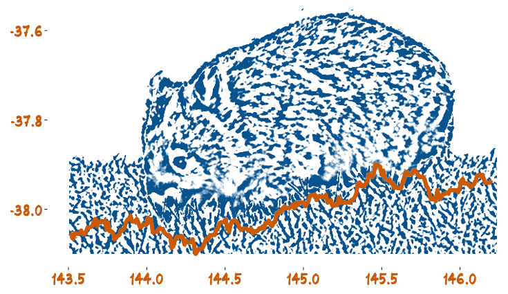

Reproducible Data Analysis
Workshop Organised by the Monash Business Analytics Team (WOMBAT)
May 29-Jun 2 2017
Programme
Tutorials
Monday
Rob Hyndman, Earo Wang
Time Series in R, Forecasting and Visualisation
Tuesday
Yihui Xie
RMarkdown Ecosystem
Wednesday morning
Di Cook, Eun-Kyung Lee
Visualisation for Data Mining
Wednesday afternoon
Stephanie Kovalchik
Sports Analytics with R
Thursday
Lawrence Mosley, Eric Hare
Building Web Apps and Dashboards with RStudio's Shiny
Talks
Keynote
Yihui Xie
Towards An Open-access, Fast, and Reproducible Journal
9:30-9:55
Ann Nicholson
Bayesian networks for decision making under uncertainty
10:00-10:25
Anastasios Panagiotelis
Building an Interactive Choropleth using Shiny
10:45 - 11:10
Diana Benavides Prado
Implementation of a predictive model to support child maltreatment hotline screening decisions
11:15 - 11:40
Nick Tierney
Tidy approaches to Missing Data
11:45 - 12:10
Eun-kyung Lee
Visualization of Projection Pursuit Classification Tree Models
2:30- 2:55
Simon Angus
The Internet as a quantitative social science observation platform
3:00 - 3:25
Stephanie Kovalchik
Challenges of the Challenge System in Professional Tennis
Sponsors